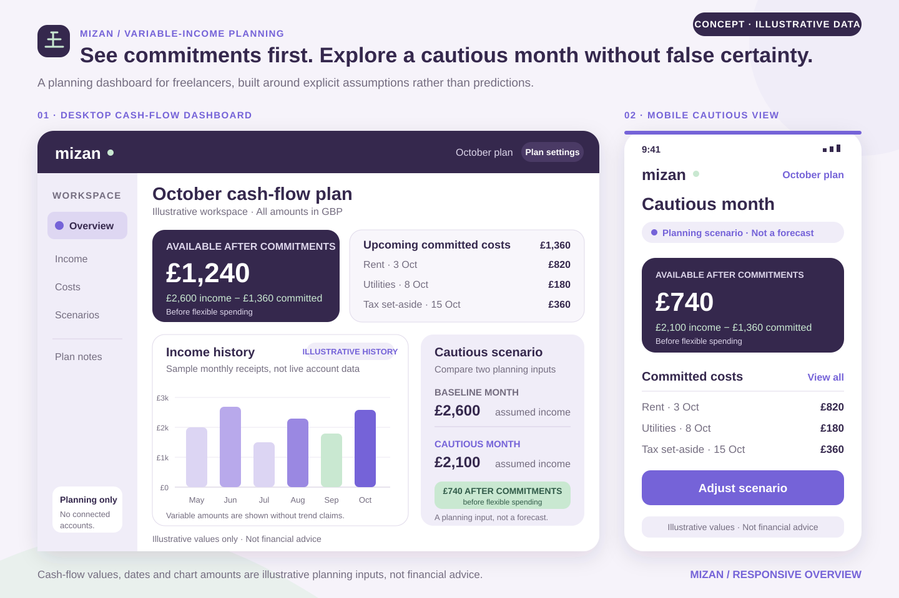
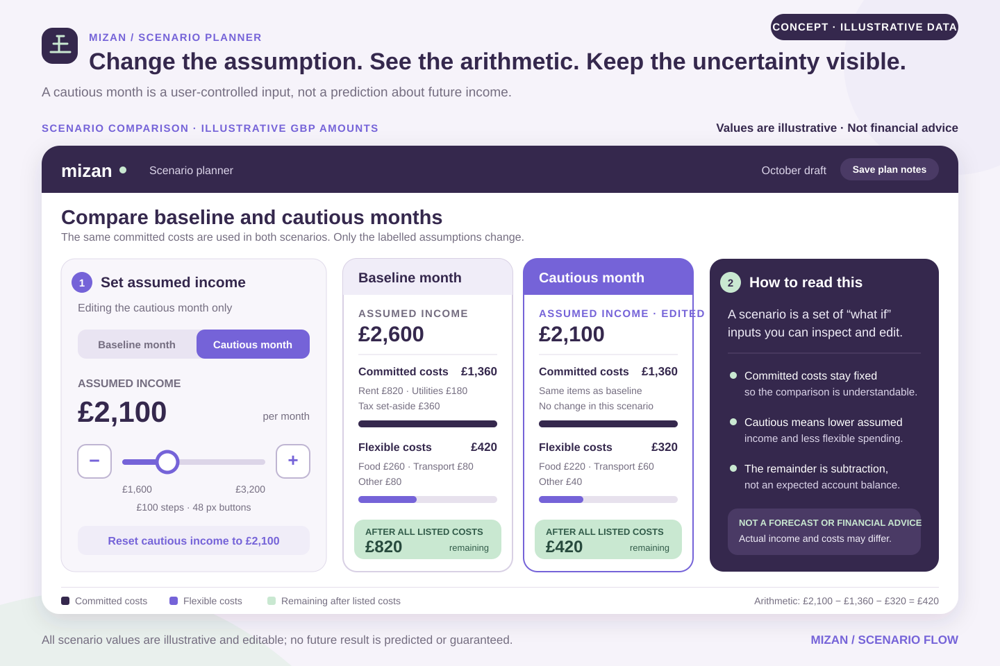

Concept Project · Self-initiated
Mizan
Planning around what is committed before deciding what is flexible.

The design brief
Mizan explores a planning dashboard for freelancers whose income can vary from month to month. Rather than centering a single account balance, the concept separates upcoming commitments, flexible spending, and scenario assumptions.
Its core question is: how can an interface support a cautious planning decision without presenting an uncertain future as a forecast?
No bank connections, real accounts, financial recommendations, predictions, or outcomes exist in this concept. All amounts, categories, and income histories are illustrative.
Source-informed observations
General irregular-income budgeting guidance emphasizes starting with fixed expenses, considering flexible expenses, and understanding income before setting a final budget. That sequence offers a useful information hierarchy for the dashboard.
The CFPB’s financial-wellbeing work provides broader background for treating wellbeing as more than a single balance. Mizan interprets these references as interface-organizing principles, not as proof that a particular visualization improves financial behavior.
Assumptions
- A person can enter or review expected income without connecting a financial institution.
- Recurring commitments are known enough to list, even when income is uncertain.
- A cautious scenario should be editable and visibly based on an assumption.
- Planning language must avoid guarantees, optimization claims, and prescriptive financial advice.
- Values need clear timeframes and categories to be interpretable.
These assumptions shape the concept and would need direct validation with the intended audience.
Proposed experience
Commitments come before flexible choices
The overview shows upcoming committed costs next to the amount that remains after them, making the calculation visible rather than presenting an unexplained “safe” number.
Income history is context, not a forecast
A historical chart describes past entries and avoids extending a predictive line into future months.
Scenarios expose their assumptions
Baseline and cautious views are compared side by side, with the assumed income control and resulting category changes kept in the same workspace.
Scenario planner
The second proof sheet expands the comparison into an editable planning surface. The interface explains what changed and keeps the person in control of the assumption.

Accessible, responsible data UI
- Pair charts with exact labeled values and a textual summary; never encode categories by color alone.
- Keep currency, timeframe, and calculation context adjacent to important totals.
- Label scenario inputs as assumptions and avoid certainty language such as “you can safely spend.”
- Preserve readable tabular structure on small screens rather than shrinking an entire desktop dashboard.
- Provide a non-chart route to the same commitments and category information.
What to validate next
Future research should test whether people can explain the remaining-after-commitments calculation, distinguish history from assumptions, and adjust a scenario without interpreting it as advice. Financial-content review would also be necessary before any real implementation.
No financial, behavioral, accessibility, or usability outcome is claimed for these screens.
Research & Design References
These references informed category structure and the broader framing of wellbeing. They do not validate Mizan or its illustrative calculations.
- Penn State Extension — Budgeting with Irregular IncomeFixed expenses, flexible expenses, and budgeting sequence
- CFPB — Financial well-beingBroader background on financial wellbeing
- W3C — How to Meet WCAGAccessible data-presentation verification criteria